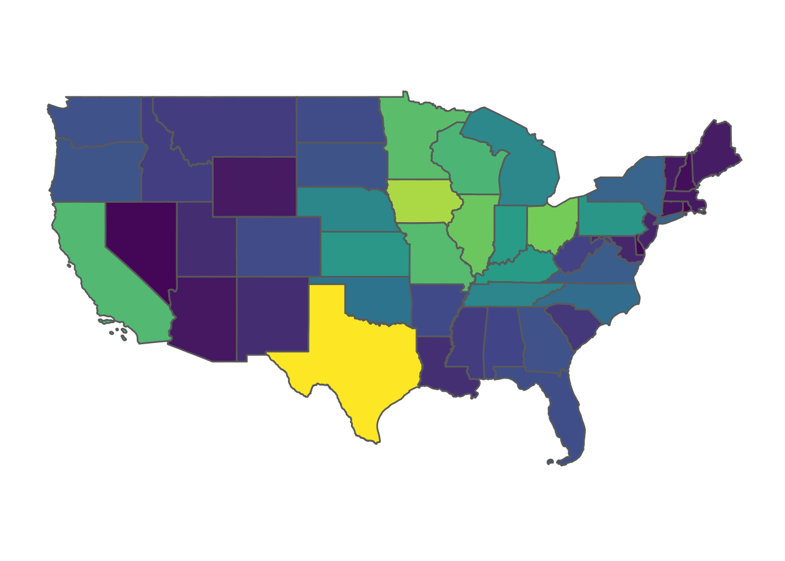

Announcing tidyUSDA: A Package for working with USDA Data
LinkedIn | Github | Blog | Subscribe

I’m proud to announce the release of an R package that has cured one of my own personal itches: pulling and working with USDA data, specifically Quick Stats data from NASS. tidyUSDA is a minimal package for doing just that. The following is cut out from the package vignette, which you can find here: https://bradlindblad.github.io/tidyUSDA
Why tidyUSDA?
Why do we need yet another “tidy” package? Why do I have to install so many geospatial dependencies?
Valid questions. If you work with USDA data, you know that it is difficult at times to find what you need, when you need it. The sheer amount of data (the 2017 Census of Agriculture included some 6.4 million points of information [1]) should be a credit to the USDA, as that is a huge organizational task.
Currently, the best way to pull data from previous Censuses of Agriculture and Agriculture Surveys is through the Quick Stats web portal, which allows you to apply filters in an interactive gui and then download CSV files. This works great for most applications, but R programmers hate having to pull data non-programmatically, which is where tidyUSDA comes in.
Programmatic data pulls directly from Quick Stats At its core, tidyUSDA is an API for the Quick Stats data, allowing you to pull that same data into a dataframe in your R session.
Geospatial capabilities tidyUSDA also gives you the option to automatically add a simple features column to the Quick Stats data, either at a county or national level. This allows you to quickly visualize Quick Stats data for fast iterations or report generation.
Quick start
First, install tidyUSDA with the instructions in the README section. Note that you may have to upgrade your R version if you are on an older build.
Next, call tidyUSDA to make sure everything is installed correctly.
The USDA controls access to their data with API keys. You can quickly obtain your free API key by following the brief instructions at this link.
Let’s pull some data now.
# Use keyring to store your api key
# key <- keyring::key_get("tidyusda")
# Or hard code that thing
key <- '7CE0AFAD-EF7B-3761-8B8C-6AF474D6EF71' # please get your own key!At this point, it’s best to use the actual Quick Stats website to pick out the parameters you would like to filter by. This way you know for sure that data will be returned. I want to see a state-level breakdown of counts of operations using the 2017 census data.
At this point it helps to see which possible values you can input into the function parameters. You can view these possible inputs for all of the parameters with the built-in datasets. Let’s check a few out.
tidyUSDA::allCategory %>% head() statisticcat_desc1 statisticcat_desc2
"ACCESSIBILITY" "ACCESSIBILITY, 5 YEAR AVG"
statisticcat_desc3 statisticcat_desc4
"ACCESSIBILITY, PREVIOUS YEAR" "ACTIVE GINS"
statisticcat_desc5 statisticcat_desc6
"ACTIVITY" "ACTIVITY, 5 YEAR AVG" So it looks like there are only six possible input values for the category field. Good to know.
tidyUSDA::allGeogLevel %>% head() agg_level_desc1 agg_level_desc2
"AGRICULTURAL DISTRICT" "AMERICAN INDIAN RESERVATION"
agg_level_desc3 agg_level_desc4
"COUNTY" "INTERNATIONAL"
agg_level_desc5 agg_level_desc6
"NATIONAL" "REGION : MULTI-STATE" There are many different geography levels. Currently there is only support for providing geometries for county and state values.
Now that we’re a little more clear on what we can input, let’s use our main function for data pulling.
# Get count of operations with sales in 2017
ops.with.sales <- tidyUSDA::getQuickstat(
sector=NULL,
group=NULL,
commodity=NULL,
category=NULL,
domain='TOTAL',
county=NULL,
key = key,
program = 'CENSUS',
data_item = 'CROP TOTALS - OPERATIONS WITH SALES',
geographic_level = 'STATE',
year = '2017',
state = NULL,
geometry = TRUE,
lower48 = TRUE)Note that I set geometry = TRUE in order to include the geometry feature that we need for plotting, and that I set lower48 = TRUE in order to exclude Hawaii and Alaska.
At this point, I have a dataframe with a rather verbose number of data fields. If you set geometry = TRUE, you will have even more columns. The main data point from Quick Stats will be in the ‘Value’ field. Feel free to filter the data frame for the fields you actually need at this point.
Now let’s see what the data looks like with a basic choropleth map.
# Plot this data for each state
tidyUSDA::plotUSDA(df = ops.with.sales)
Note: it is a known issue that the RStudio graphics device on Mac Os X can be extremely laggy when plotting. To get around this, feel free to use your own plotting methods such as the tmap package or leaflet.
OK wow so it looks like all the farms in the country are in California. But wait a second, California is huge as far as landmass, and the relative size of the farms are smaller on balance, so maybe we should look at this a different way. First let’s clean up the dataframe so it’s easier to work with.
mydata <- ops.with.sales[,c("NAME", "Value", "ALAND")]We select the name of the state, the value from our Quick Stat query (number of ops) and ‘ALAND’, which is the land area in square meters. Let’s modify our dataframe to calculate the number of operations per square meter, so the size of the state doesn’t affect what we’re trying to derive.
mydata$ALAND <- as.numeric(mydata$ALAND)
mydata$modified_value <- mydata$Value / mydata$ALANDThis gives us a bunch of really small numbers that don’t make sense, but for our purposes of mapping, they’ll do.
tidyUSDA::plotUSDA(df = mydata, fill_by = 'modified_value')Ahh, much better. Now we have a true plot showing the number of operations per square meter. Looks like California still has the most farms per dirt clod than any other state.
Taking it further
This package was designed for data analysts and scientists, meaning that the output of getQuickstat is particularly verbose, rather than cherry-picked, giving the user extra data that may be useful. If you do intend to plot the data that you pull down with getQuickstat, don’t feel like you need to use plotUSDA to visualize the results; you can use any method you’d like to plot the simple features geometry.
How you can contribute
You can report a bug or request new features at https://github.com/bradlindblad/tidyUSDA/issues.
Want more content like this? Subscribe here
References
[1] (https://www.usda.gov/media/press-releases/2019/04/11/2017-census-agriculture-data-now-available)